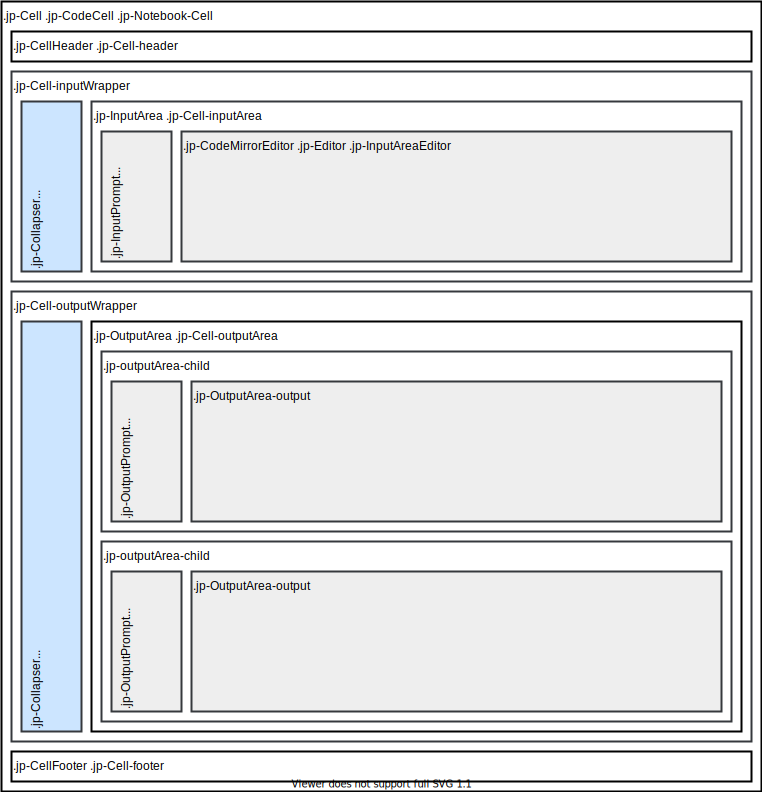
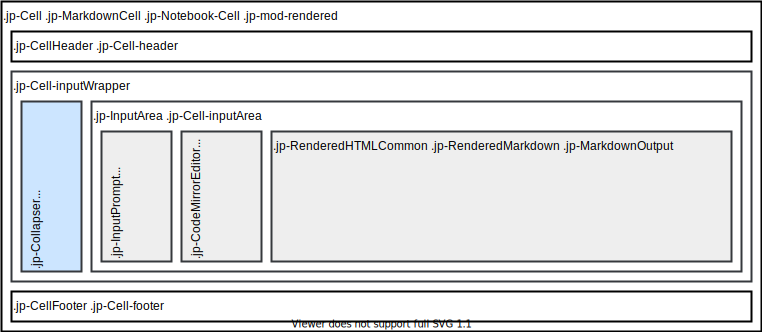
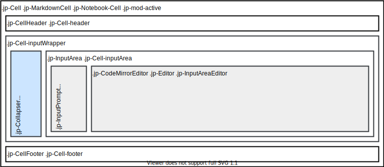

Notebook#
Background#
A JupyterLab architecture walkthrough from June 16, 2016, provides an overview of the notebook architecture.
The most complicated plugin included in the JupyterLab application is the Notebook plugin.
The NotebookWidgetFactory constructs a new NotebookPanel from a model and populates the toolbar with default widgets.
Structure of the Notebook plugin#
The Notebook plugin provides a model and widgets for dealing with notebook files.
Model#
The NotebookModel contains an observable list of cells.
A cell model can be:
a code cell
a markdown cell
raw cell
A code cell contains a list of output models. The list of cells and the list of outputs can be observed for changes.
Cell operations#
The NotebookModel cell list supports single-step operations such as moving, adding, or deleting cells. Compound cell list operations, such as undo/redo, are also supported by the NotebookModel. Right now, undo/redo is only supported on cells and is not supported on notebook attributes, such as notebook metadata. Currently, undo/redo for individual cell input content is supported by the CodeMirror editor’s undo feature. (Note: CodeMirror editor’s undo does not cover cell metadata changes.)
Metadata#
The notebook model and the cell model (i.e. notebook cells) support
getting and setting metadata through method getMetadata, setMetadata
and deleteMetadata (see NotebookModel
and cell model).
You can listen for changes in the metadata through the sharedModel.metadataChanged attribute
(see cell shared model
and notebook shared model).
Notebook widget#
After the NotebookModel is created, the NotebookWidgetFactory constructs a new NotebookPanel from the model. The NotebookPanel widget is added to the DockPanel. The NotebookPanel contains:
a Toolbar
The NotebookPanel also adds completion logic.
The Notebook toolbar maintains a list of widgets to add to the toolbar. The Notebook widget contains the rendering of the notebook and handles most of the interaction logic with the notebook itself (such as keeping track of interactions such as selected and active cells and also the current edit/command mode).
The NotebookModel cell list provides ways to do fine-grained changes to the cell list.
Higher level actions using NotebookActions#
Higher-level actions are contained in the NotebookActions namespace, which has functions, when given a notebook widget, to run a cell and select the next cell, merge or split cells at the cursor, delete selected cells, etc.
Widget hierarchy#
A Notebook widget contains a list of cell widgets, corresponding to the cell models in its cell list.
Each cell widget contains an InputArea,
which contains a CodeEditorWrapper,
which contains a JavaScript CodeMirror instance.
A
CodeCell
also contains an
OutputArea.
An OutputArea is responsible for rendering the outputs in the
OutputAreaModel
list. An OutputArea uses a notebook-specific
RenderMimeRegistry
object to render display_data output messages.
The Notebook widget is represented in the DOM with a <div> element
with CSS classes jp-Notebook and jp-NotebookPanel-notebook.
It contains a sequence of cells widgets.
Code cells have the following DOM structure:
Rendered markdown cells have the following DOM structure:
Active markdown cells have the following DOM structure:

Note
The default nbconvert template for the HTML exporter produces the same DOM as the JupyterLab notebook, allowing for the JupyterLab CSS to be used directly. In JupyterLab, input areas are rendered with the CodeMirror, with a custom theme making use of the CSS variables of JupyterLab. In the case of nbconvert, code cells are rendered using the Pygments Python library, which produces static HTML with syntax highlighting. The jupyterlab_pygments Pygments theme mimics the default CodeMirror theme of JupyterLab.
Note
The SVG figures presenting the DOM structures of the different cell types were produced with Draw.io, and contain the metadata allowing them to be directly opened and edited with Draw.io.
Rendering output messages#
A Rendermime plugin provides a pluggable system for rendering output messages. Default renderers are provided for markdown, html, images, text, etc. Extensions can register renderers to be used across the entire application by registering a handler and mimetype in the rendermime registry. When a notebook is created, it copies the global Rendermime singleton so that notebook-specific renderers can be added. The ipywidgets widget manager is an example of an extension that adds a notebook-specific renderer, since rendering a widget depends on notebook-specific widget state.
Keyboard interaction model#
Multiple elements can receive focus in the Notebook: - the main toolbar, - cells, - cell components (editor, toolbar, outputs).
When the focus is outside of the cell input editor,
the Notebook switches to so-called “command” mode.
In the command mode additional keyboard shortcuts are accessible to the user,
enabling quick access to cell- and notebook-specific actions.
These shortcuts are only active when the notebook is in command mode
and the active element is non-editable,
as signalled by absence of .jp-mod-readWrite class on the notebook node.
This class is set if the active element is editable as ascertained by matching
to the :read-write pseudo-selector, and accounts for any elements nested
in the open shadow DOM, but not for the closed shadow DOM nor non-editable
elements with custom key event handlers (such as
<div contenteditable="false" onkeydown="alert()" tabindex="0"></div>).
If your output widget (for example created with IPython.display.HTML,
or created by your MIME renderer on cell output in a notebook or console)
uses closed shadow DOM or non-editable elements with custom
key event handlers, you may wish to set lm-suppress-shortcuts data attribute
on the host element to prevent side-effects from the command-mode actions, e.g:
<div
contenteditable="false"
onkeydown="alert()"
tabindex="1"
data-lm-suppress-shortcuts="true"
>
Click on me and press "A" with and without "lm-suppress-shortcuts"
</div>
How to extend the Notebook plugin#
We’ll walk through two notebook extensions:
adding a button to the toolbar
adding a widget to the notebook header
adding an ipywidgets extension
Adding a widget to the notebook header#
Start from the extension template.
pip install "copier~=9" jinja2-time
mkdir myextension
cd myextension
copier copy --trust https://github.com/jupyterlab/extension-template .
Install the dependencies. Note that extensions are built against the released npm packages, not the development versions.
jlpm add -D @jupyterlab/notebook @jupyterlab/application @jupyterlab/ui-components @jupyterlab/docregistry @lumino/disposable @lumino/widgets
Copy the following to src/index.ts:
import { IDisposable, DisposableDelegate } from '@lumino/disposable';
import { Widget } from '@lumino/widgets';
import {
JupyterFrontEnd,
JupyterFrontEndPlugin
} from '@jupyterlab/application';
import { DocumentRegistry } from '@jupyterlab/docregistry';
import { NotebookPanel, INotebookModel } from '@jupyterlab/notebook';
/**
* The plugin registration information.
*/
const plugin: JupyterFrontEndPlugin<void> = {
activate,
id: 'my-extension-name:widgetPlugin',
description: 'Add a widget to the notebook header.',
autoStart: true
};
/**
* A notebook widget extension that adds a widget in the notebook header (widget below the toolbar).
*/
export class WidgetExtension
implements DocumentRegistry.IWidgetExtension<NotebookPanel, INotebookModel>
{
/**
* Create a new extension object.
*/
createNew(
panel: NotebookPanel,
context: DocumentRegistry.IContext<INotebookModel>
): IDisposable {
const widget = new Widget({ node: Private.createNode() });
widget.addClass('jp-myextension-myheader');
panel.contentHeader.insertWidget(0, widget);
return new DisposableDelegate(() => {
widget.dispose();
});
}
}
/**
* Activate the extension.
*/
function activate(app: JupyterFrontEnd): void {
app.docRegistry.addWidgetExtension('Notebook', new WidgetExtension());
}
/**
* Export the plugin as default.
*/
export default plugin;
/**
* Private helpers
*/
namespace Private {
/**
* Generate the widget node
*/
export function createNode(): HTMLElement {
const span = document.createElement('span');
span.textContent = 'My custom header';
return span;
}
}
And the following to style/base.css:
.jp-myextension-myheader {
min-height: 20px;
background-color: lightsalmon;
}
Run the following commands:
pip install -e .
jupyter labextension develop . --overwrite
jupyter lab
Open a notebook and observe the new “Header” widget.
The ipywidgets third party-extension#
This discussion will be a bit confusing since we’ve been using the term widget to refer to lumino widgets. In the discussion below, Jupyter interactive widgets will be referred to as ipywidgets. There is no intrinsic relation between lumino widgets and Jupyter interactive widgets.
The ipywidgets extension registers a factory for a notebook widget
extension using the Document
Registry.
The createNew() function is called with a NotebookPanel and
DocumentContext.
The plugin then creates a ipywidget manager (which uses the context to
interact the kernel and kernel’s comm manager). The plugin then
registers an ipywidget renderer with the notebook instance’s rendermime
(which is specific to that particular notebook).
When an ipywidget model is created in the kernel, a comm message is sent
to the browser and handled by the ipywidget manager to create a
browser-side ipywidget model. When the model is displayed in the kernel,
a display_data output is sent to the browser with the ipywidget
model id. The renderer registered in that notebook’s rendermime is asked
to render the output. The renderer asks the ipywidget manager instance
to render the corresponding model, which returns a JavaScript promise.
The renderer creates a container lumino widget which it hands back
synchronously to the OutputArea, and then fills the container with the
rendered ipywidget when the promise resolves.